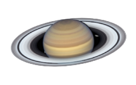
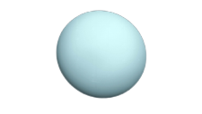

|
MARS |
SATURN  |
URANUS  |
EARTH | |
|---|---|---|---|---|
Mass (1024 kg) |
0.642 | 568 | 86.8 | 5.97 |
Diameter (km) |
6,792 | 120,536 | 51,118 | 12,756 |
Orbital Velocity (km/s) |
24.1 | 9.7 | 6.8 | 29.8 |
Escape Velocity (km/s) |
5.0 | 35.5 | 21.3 | 11.2 |
Average Distance from Sun (106 km) |
228.0 | 1432.0 | 2867.0 | 149.6 |
Ring System? |
No | Yes | Yes | No |
Mean Temperature (C) |
-65° | -140° | -195° | 15° |